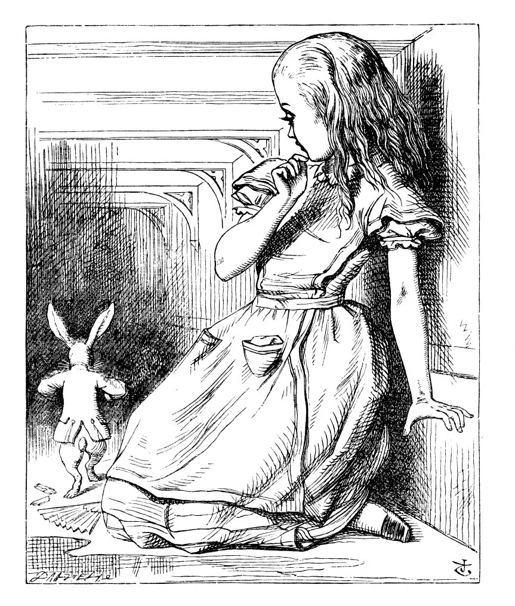
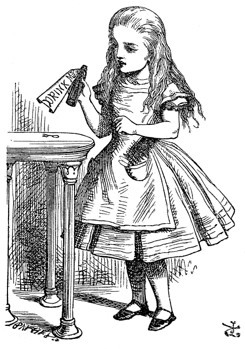
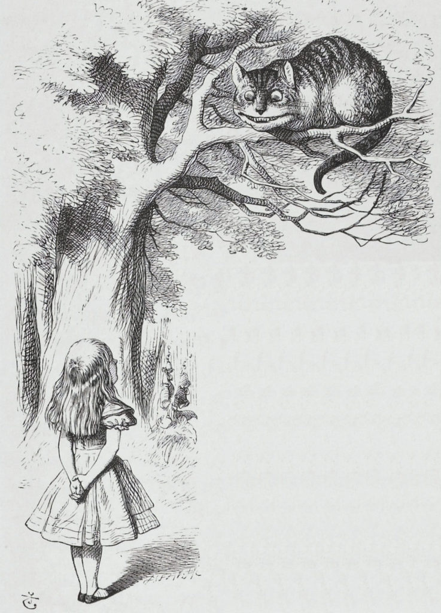
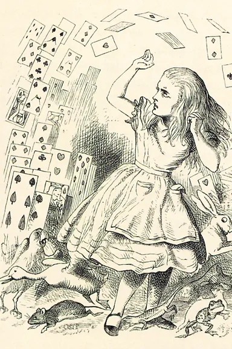

Top

Research
My interest in algebraic geometry is typically category/cohomology/homotopic and those of deformation, I’d like to develop problems in Fukaya category, moduli problems, connection with CFT, or any others. I listed some of my current focus below, where each of them is a distinct problem but still somewhat relevant and consistent, and the links below are research proposals but not publishment quality yet:
-
•
-Enhancement of Geometry
The proof of homological mirror symmetry conjecture is discussed from multi-dimensional perspective, including counting Gromow-Witten invariant, or Balmer spectrum, while generalizing formal geometry of non-unital algebra to category. [link]
-
•
DG Lie Algebroid and Quotient Stack
Derived algebraic geometry proves the -equivalence of dg Lie algebroid and foliation. Now the quotient is defined by quotient of dg groupoid generated from dg Lie algebroid, and it’s calculated by dg version of Chevalley-Eilenberg complex. I’m also wondering evaluation of the foliation using language of DT/GW invariants. [link]

Exposition
-
•
What is Math?
This is ideally for everybody, who are doubting the purpose of math higher than calculus and linear algebra. The tone of the argument is describing the process of how the high school math jump into the research math. [link] -
•
(Spring 2026) Intro to Deformation
DAG stands from AG + deformation. -language. [link] -
•
(Fall 2022) Cheat Cheet Mirror Symmetry
Marc Gross’s tropical/toric geometry and quantum cohomology for mirror symmetry. It’s for exam for PhD Candidate. [link] -
•
(Winter 2019) Brown Representability
Introducing Brown representability in triangulated category. It’s bachelor’s thesis. [link]

Casual Non-Research Interests
Below is the list of materials I personally think interesting, and they are somewhat connecting to algebraic geometry. However, they are quite different from my focus, and I don’t have time for them.
-
•
AdS/CFT
AdS/CFT claims the correspondence of the boundaries not only the shape but also the behavior on it of both AdS and CFT, even though AdS and CFT are mathematically very different structures. The phenomena on the boundary is called holography. Ryu-Takayanagi induces the formula of quantum-entanglement from AdS/CFT correspondence. Meanwhile, CFT itself can derive a variety of Non-linear PDE in particular Navier-Stokes equation, and AdS is modeled algebraic geometrically using Sasaki-Einstein. -
•
Spin(7) Geometry and M-theory
The benefit of generalizing superstring theories to M-theory is efficiating computation of perturbation effect, while M-theory is generating holonomy in 11-dimensional space. Joyce conjecture claims moduli space of coassociative submanifold of bundle contains symplectic structure. -
•
(Fall 2022), Intro to Geometric Satake Correspondence
Grand relationship among AG, RT, and NT. [link] -
•
Geometric Langlands
Geometric Langlands is a duality connecting local system and D-module and Higgs bundle, and this is not number theory. 4d CFT derives Higgs bundle through Kapstin-Witten, whose S-duality is D-module.

Junk
I have invented two junk pdf of totally approximatelly 200 pages created with conversation of chatGPT or any others, and it was a journey of searching my broad interests in math. Actually it helped me a lot, who was struggling with rabbit holing wikipedia and losing the purpose of study. I’ll leave for some period of time as a demonstration of my progress, but this is useless, and I don’t plan to reread it again in the future.